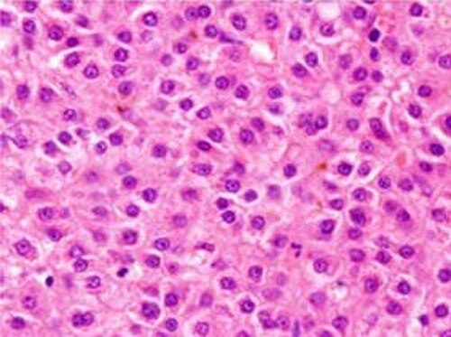

Información divulgativa. No sustituye la valoración de tu equipo médico ni sirve para decidir un tratamiento.


En resumen
| Frecuencia | 870.000 casos al año en el mundo (sexto más frecuente, tercera causa de muerte por cáncer); unos 6.600 en España |
| Tipo | Hepatocarcinoma (80-85 %); colangiocarcinoma intrahepático (10-15 %) |
| Causas | Cirrosis por hepatitis B o C, alcohol, hígado graso metabólico (MASLD) |
| Prevención | Vacuna de la hepatitis B, tratamiento de la hepatitis C, no abusar del alcohol, controlar el peso |
| Detección | Ecografía cada 6 meses en personas con cirrosis |
| Tratamiento | Resección, trasplante, ablación, quimioembolización, inmunoterapia |
| Supervivencia | Alrededor del 20 % a cinco años; más del 70 % si se detecta pronto |
Qué es
El hepatocarcinoma (carcinoma hepatocelular) nace de los hepatocitos, las células principales del hígado. No hay que confundirlo con las metástasis hepáticas de otros cánceres (colon, mama, páncreas), mucho más frecuentes en Europa, que se tratan según el tumor de origen.
En el 80-90 % de los casos aparece sobre una cirrosis: el hígado dañado durante años se llena de cicatrices y nódulos de regeneración, en los que se acumulan mutaciones.
Los cánceres primarios de hígado incluyen también el colangiocarcinoma intrahepático y, en niños, el hepatoblastoma.
Cuántos casos hay
Es muy frecuente en Asia oriental y África subsahariana por la hepatitis B y las aflatoxinas. En Europa y España está aumentando por el hígado graso metabólico (MASLD, antes NAFLD) asociado a obesidad y diabetes, mientras la hepatitis C desciende gracias a los antivirales.
Factores de riesgo
| Factor | Comentario |
|---|---|
| Hepatitis B crónica | Puede causar cáncer incluso sin cirrosis |
| Hepatitis C crónica | Hoy se cura en más del 95 % con antivirales; el riesgo disminuye, pero no desaparece si ya hay cirrosis |
| Alcohol | Causa importante de cirrosis en Europa |
| Hígado graso metabólico (MASLD/MASH) | Asociado a obesidad, diabetes y síndrome metabólico; causa en aumento |
| Aflatoxinas | Toxinas de hongos en alimentos mal almacenados (cacahuetes, maíz) en países cálidos |
| Otras | Hemocromatosis, tabaco, cirrosis biliar, déficit de alfa-1 antitripsina |
Prevención
- Vacuna de la hepatitis B, incluida en el calendario infantil español desde los años 90: la primera vacuna contra el cáncer.
- Diagnosticar y tratar la hepatitis C (pruebas al menos una vez en la vida) y controlar la hepatitis B con antivirales.
- Limitar el alcohol, mantener un peso saludable, hacer ejercicio. El café se asocia con menos riesgo.
- Vigilancia con ecografía cada 6 meses (con o sin alfafetoproteína) en personas con cirrosis o hepatitis B de alto riesgo. Detecta tumores pequeños tratables con intención curativa.
Síntomas
Los tumores precoces no dan síntomas: por eso la vigilancia es clave. En fases avanzadas: dolor en el lado derecho del abdomen, pérdida de peso, cansancio, descompensación de la cirrosis (ascitis, ictericia, encefalopatía), masa palpable.
Diagnóstico
- TC o resonancia con contraste: el hepatocarcinoma tiene un patrón típico (capta contraste en fase arterial y lo "lava" en la tardía) que permite diagnosticarlo sin biopsia en un hígado cirrótico (sistema LI-RADS).
- Alfafetoproteína (AFP) en sangre.
- Biopsia si la imagen no es típica o no hay cirrosis.
- Valoración de la función hepática (Child-Pugh, MELD) y del estado general.
Estadios y tratamiento (sistema BCLC)
La clasificación de Barcelona (BCLC), creada en el Hospital Clínic por Jordi Bruix y Josep M. Llovet, es la referencia mundial: une el tumor, la función hepática y el estado general con el tratamiento recomendado.
| Estadio BCLC | Descripción | Tratamiento | Supervivencia |
|---|---|---|---|
| 0 (muy precoz) | Un nódulo < 2 cm | Ablación o resección | > 5 años |
| A (precoz) | Uno o hasta 3 nódulos < 3 cm | Resección, trasplante o ablación | > 5 años |
| B (intermedio) | Multinodular, sin invasión vascular | Quimioembolización (TACE), trasplante en casos seleccionados, tratamiento sistémico | > 2,5 años |
| C (avanzado) | Invasión vascular o metástasis | Inmunoterapia y otros fármacos | > 2 años |
| D (terminal) | Función hepática muy mala | Cuidados paliativos | 3-6 meses |
Tratamientos: - Resección quirúrgica: si la función hepática es buena y no hay hipertensión portal relevante. - Trasplante hepático: cura a la vez el tumor y la cirrosis. Criterios de Milán (un nódulo de hasta 5 cm o hasta tres de hasta 3 cm). España es líder mundial en donación de órganos. - Ablación por radiofrecuencia o microondas en tumores pequeños. - Quimioembolización (TACE) y radioembolización (con microesferas de itrio-90). - Radioterapia estereotáctica en casos seleccionados. - Tratamiento sistémico: atezolizumab con bevacizumab (ensayo IMbrave150) o durvalumab con tremelimumab (ensayo HIMALAYA) en primera línea; también nivolumab con ipilimumab. Lenvatinib, sorafenib, regorafenib, cabozantinib y ramucirumab en otras líneas.
Pronóstico
Global, alrededor del 20 % a cinco años en Europa, pero superior al 70 % en los tumores detectados por vigilancia y tratados con trasplante o resección. La inmunoterapia ha prolongado la supervivencia en la enfermedad avanzada, con algunos pacientes vivos a cinco años.
Después del tratamiento
Las recaídas son frecuentes (hasta el 70 % a cinco años tras la resección) porque el hígado sigue enfermo, por lo que se vigila con TC o resonancia cada 3-6 meses. Controlar la causa (abstinencia de alcohol, antivirales, peso) es tan importante como el tratamiento del tumor.
Preguntas para tu equipo
- ¿Cómo está la función de mi hígado (Child-Pugh)?
- ¿En qué estadio BCLC estoy?
- ¿Soy candidato a trasplante?
- ¿Qué puedo hacer para proteger mi hígado?
Más información
Ver también: Colangiocarcinoma, Hepatoblastoma, Vacunas y cáncer, Tabaco, alcohol y otros riesgos.
Historia · Medicapedia
Cáncer de hígado (hepatocarcinoma) en la historia de la medicina
Cómo se descubrió, quién lo investigó y cómo cambió su tratamiento a lo largo de los siglos, contado en Medicapedia, nuestra web hermana de historia de la medicina.
Leer la historia en Medicapedia ↗Fuentes
- Reig M, et al. BCLC strategy for prognosis prediction and treatment recommendation: the 2022 update. J Hepatol. 2022;76:681-693. doi:10.1016/j.jhep.2021.11.018
- European Association for the Study of the Liver. EASL Clinical Practice Guidelines on the management of hepatocellular carcinoma. J Hepatol. 2025.
- Finn RS, et al. Atezolizumab plus bevacizumab in unresectable hepatocellular carcinoma (IMbrave150). N Engl J Med. 2020;382:1894-1905. doi:10.1056/NEJMoa1915745
- Abou-Alfa GK, et al. Tremelimumab plus durvalumab in unresectable hepatocellular carcinoma (HIMALAYA). NEJM Evid. 2022;1(8). doi:10.1056/EVIDoa2100070
- Mazzaferro V, et al. Liver transplantation for the treatment of small hepatocellular carcinomas in patients with cirrhosis. N Engl J Med. 1996;334:693-699. doi:10.1056/NEJM199603143341104
- Bray F, et al. Global cancer statistics 2022: GLOBOCAN. CA Cancer J Clin. 2024;74:229-263. doi:10.3322/caac.21834
Guías y documentos recientes (2024-2026)
- SEOM y REDECAN. Las cifras del cáncer en España 2026. Madrid: SEOM; 2026. seom.org
- Vogel A, et al. Hepatocellular carcinoma: ESMO Clinical Practice Guideline for diagnosis, treatment and follow-up. Ann Oncol. 2025;36:491-506. doi:10.1016/j.annonc.2025.02.006
Fuentes revisadas y actualizadas en noviembre de 2026.